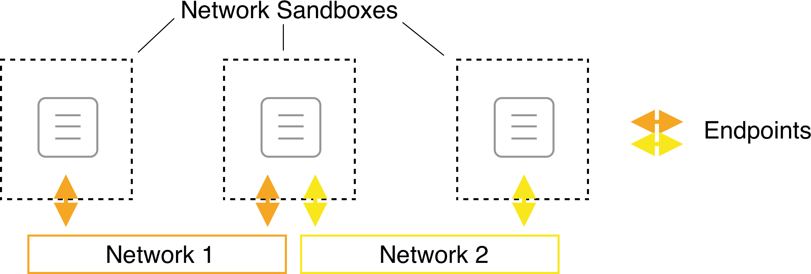
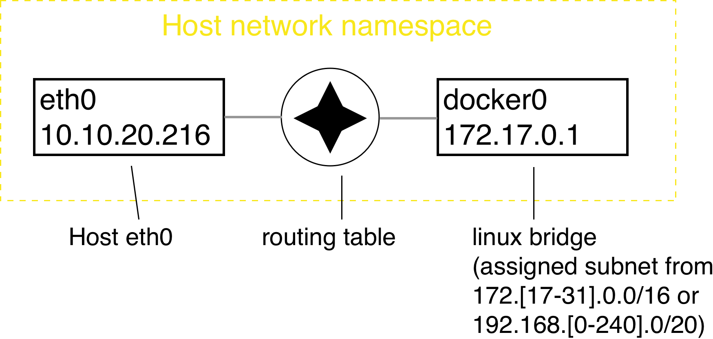

Network traffic must by definition traverse a network outside its originating container. How can we make inter-container communication as portable and secure as containers themselves?
Learning Objectives
By the end of this module, learners will be able to
Describe Docker's container network model and its security implications
Describe the basic technologies that underwrite single host networks
Understand how Docker manipulates a host's firewall rules to control container traffic
The Container Network Model

Linux: Default Single-Host Network

Linux: Default Container Networking
Quiz: identify the sandbox, endpoint and network corresponding to the container networking model objects in this diagram.
Linux: User-Defined Bridges & Firewalls
Exposing Container Ports
Containers have no public IP address by default.
Can forward host port -> container port
Mapping created manually or automatically.
Port mappings visible via docker container ls or docker container port
Instructor Demo: Single Host Networks
See the demo
Single Host Networks
In the Exercises book.
Exercise: Single Host Networks
Work through
Introduction to Container Networking
Container Port Mapping
in the Exercises book.
Docker Networking Takeaways
Single host networks follow the container networking model:
Sandbox: Network namespaces
Endpoint: veth (linux)
Network: bridge (linux)
Containers resolve each other by DNS lookup when explicitly named and attached to custom networks
Docker software defined networks are firewalled from each other by default